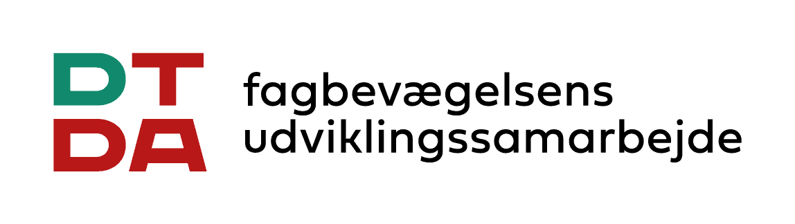
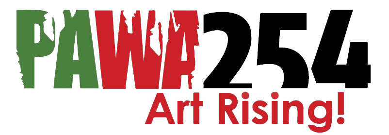
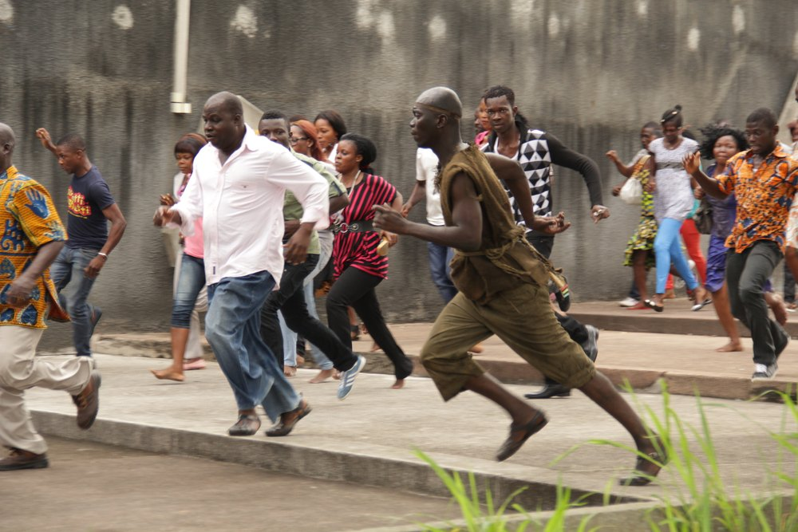

About
Europe and Africa need each other. Their relationships have to be seen to be trusted, so we build partnerships around visual storytelling.
Our work has been supported by


The logos are each organisation’s own, taken from its website on 10 November 2026 and shown in one dark tone at equal optical weight. Before launch each gets a short courtesy note (we show you among those who supported our work), which also brings its official one-colour file to replace these. CKU is left out (closed); Canon only if it supported Øksnehallen.
The archive
We run an archive of photographs of contemporary Africa for the organisations that work with the continent.
It is free for the non-profit and public partners we approve; companies take part by sponsoring a collection. Every download is a licence for one stated use, so we know where the images go. The archive grows by collections.
Before the archive, our team’s images were licensed through Getty Images by companies including
VISAWestern UnionMTNMcKinsey Global InstituteAirtelSamsungPearson
In 2025 we took them back, so that they serve one purpose: to carry this picture of Africa into the work of organisations that work with the continent.
Companies that bought our team’s images, the images now in the archive. Institutional names (the UN, the World Bank, the BBC and others) are added once Thomas has checked they bought the team’s images.
Principles
Behind every image and every collaboration.
An organisation that uses our images puts its own name beside them, and a sponsor puts its name on a whole collection. These are what each of them can rely on. They hold for every collection, sponsored or our own.
- Real images
Every photograph is made by a photographer on location. Our images are never AI-generated, and what they show is never altered.
- Consent
The people in the images agreed to be photographed and to the uses the archive allows.
- Credited, fairly paid photographers
The photographers are paid for their work, and every image carries its credit line.
- Editorial independence
Sponsors get name and stage, never editorial control over what the images show.
- Fair terms
One download, one licence, free of charge; no resale, no sublicensing.
The name Africa Reframed comes from an exhibition.
Exhibitions
We show African artists and our own photographs to European audiences in halls and on screens, with film, talks and workshops around the work.
Each exhibition is curated from the artists we follow and made with a venue and public funders. In 2016 Africa Reframed filled the 5,000 square metres of Øksnehallen in Copenhagen with more than 300 works by artists and designers from across the continent. The Danish Ministry of Foreign Affairs later put Namsa Leuba’s image from the show on the cover of its own evaluation.
Africa Reframed at Øksnehallen, Copenhagen, 2016. Produced with DGI-byen; supported by Danida and Augustinus Fonden. Photo: DGI-byen
Visitors among the works
Ten display modules in oriented strand board carried the works through the hall
One of the two cinemas, with films every day
Photo: DGI-byen
The artists

Stills © the films’ producers
Films at Øksnehallen
African Photography Network
An open network of photographers from and in Africa, which we have run since 2014. Photographers who want to join can write to us.
- Osborne MachariaKenya · Staged photographs that bring African stories to life, with the finish of advertising.
- Élise Fitte-DuvalMartinique and Senegal · Photographs of contemporary dance in Africa, followed from the rehearsal room to the stage.
- Fatoumata DiabatéMali · Photographs of youth, style and the night in Bamako and other cities.
- Isaac KasamaniKenya and Uganda · Photojournalism of Uganda’s politics, from the middle of the protests.
- Antonia SteynSouth Africa · Portraits of South African figures, made with a strong sense of staging.
- Ala KheirSudan · Photographs of cities, landscapes and everyday life, in Sudan and beyond.
- Adeola OlagunjuNigeria · Performance photographs that answer social, political and religious decay.
- Jon RiordanSouth Africa · Landscapes of South Africa, read for the history that lies in them.
- Mpho MokgadiSouth Africa · Black-and-white photographs on film, a diary of the people and places around him.
- Charles OkerekeNigeria · Photographs close to abstraction, on people and the environment.
- Hélène AmouzouTogo and Belgium · Self-portraits on film, made in long exposures while she waited for asylum in Belgium.
- Sydelle Willow SmithSouth Africa · Photographs and films on memory, home and migration.
- Jac KritzingerSouth Africa · Art, documentary and portrait photographs that look for what lies behind the everyday.
- Mouna KarrayTunisia · Photographs on identity, memory and constraint.
Rows of text, no images (Thomas, 10 November 2026). Each name links to the artist’s own page once it is made (Artist pages – template).
Workshops
We connect African photographers with the international picture market, so that their own stories of the continent travel.
Our workshops are built with photography schools, photographers’ unions and press associations, with a funder and a market partner in the same programme, so that training leads to work that sells. In Bamako the programme ran for six years with the school CFP Bamako and Getty Images: the students’ images were licensed by EY, NBC, Pearson and Orange, among others, and two were chosen for the campaign that launched the UN Global Goals.
Photography students at CFP Bamako. The programme was funded through the Danish Embassy in Mali. Photo: Africa Reframed
Tell Everyone: Case story – Getty Images and the UN Global Goals (2015). The students are not named, to spare them trouble at the school (Thomas).
In their words
Three of the programme’s photographers, on what it meant to them.
Short films of interviews with the photographers; played on click with a poster frame, never autoplaying (the one-motion rule).
Aboubacar Traoré
Photographer and teacher, CFP Bamako.
Massaran Diankoumba
Photographer, CFP Bamako.
John Kalapo
Photographer, CFP Bamako.
Photo: Africa Reframed
Bamako Nights
An artistic project with the students: Bamako at night, in dialogue with Seydou Keïta and Malick Sidibé, who photographed the city in its first years of independence. Shown at Øksnehallen.
Students of CFP Bamako, Bamako Nights, 2011
Workshop partners
- Sierra Leone Union of Photographers
Freetown. A workshop on the market for photographers’ work.
- Photojournalists Association of Kenya
Nairobi, at PAWA254. A master class for young photographers.
- Gambia Press Union
Banjul. A week of visual storytelling.
- Gambia Tourism and Hospitality Institute
Banjul. Three months of shooting with local photographers.
- The Africa Reframed team in Nairobi
Kenyan photographers, brought together in a workshop.
The House Collection was photographed by our team alongside the workshops.
Who is behind it
Africa Reframed is an independent, non-commercial initiative established by Commerce & Culture, the Copenhagen studio founded in 2010 by Thomas Damgaard.
Trained in design and art history, he advised the Danish Ministry of Foreign Affairs on culture and development from 2010 to 2014, and has produced photography and exhibitions with partners in Africa and Europe since. The visual identity is by the Danish designer Rune Høgsberg, first drawn for the exhibition at Øksnehallen. The archive’s photographs are made by our team.
Thomas Damgaard
Founder.
Rune Høgsberg
The identity.
CFP Bamako
Partner school.
The Nairobi team
Photographers.
Photo: Africa Reframed
Write to us
Partnerships: partnerships@africareframed.com · Press: press@africareframed.com